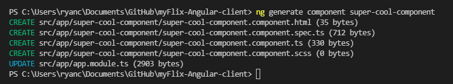
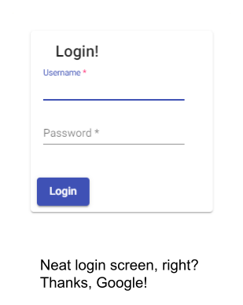
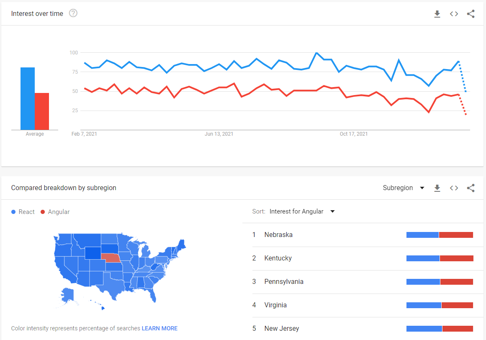

The challenge
To create an alternate front-end for my previous MyFlix CRUD application (built with React) using Angular. This application was built over three weeks as a part of CareerFoundry’s web development immersion course.
The process
I built a client-side application using Angular that consumes my previously constructed REST API to create, update, read, and delete user data. The application has the same functionality as my previously built application using React.
The goal
A responsive front-end web application demonstrating my Angular skills. Users can view information about movies stored in the database and update their personal information.
My development process
Tech Stack
My API was created using Express.js and using mongoDB for its database. You can read more about the API here.
Choosing a front-end framework is an important consideration not to be taken lightly for a “real” web application. Here, however, the purpose of this project was to learn Angular, so I used Angular. Insightful design choice, right?
Angular CLI
One thing I found intimidating at first but quickly learned to love was the Angular CLI. When I found out I’d need to use the command line to generate my components, I was nervous it would be a tedious or possibly confusing task. I was dead wrong. The Angular CLI is not a crutch, but a blessing. The CLI commands to generate components/services/whatever else do a ton of heavy lifting for you—generating template files, appropriately naming files, and connecting the files to the appropriate module so that it’s immediately ready to use. It’s like having a personal assistant organize my files for me! This is definitely a strong point for Angular.
Material Design
The other thing I found very cool about Angular was using Google’s Material Design components within my project. With Material Design, I was able to import fully functional UI components quickly and easily into my application to speed up development and apply sleek, consistent styling to my components. There are plenty of features I didn’t explore with Material Design, but next time I work on an Angular project, I’ll be sure to look into what other cool components are waiting for me on the shelf.
Retrospective
The goal of this little project was to create an alternate front-end for my previous MyFlix application using Angular. Using a previous project as a model was a pretty cool way to get a clear view of the differences in development between React and Angular apps. Now, after a few short weeks of working with Angular, I’m ready to give my definitive take on the classic debate—Angular or React?
The answer is basically both. Unless you live in Nebraska, in which case you are better off sticking with Angular. What the heck, Nebraska?
